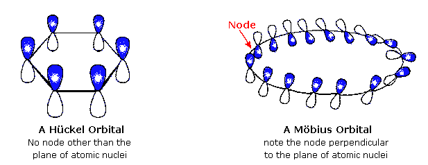
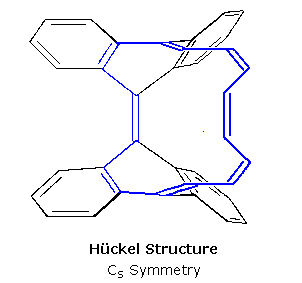
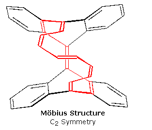
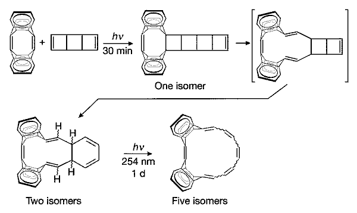

Benzene and other stable aromatic rings are characterized by a conjugated cycle of p-orbitals occupied by 4n+2 electrons (the Hückel rule). Similar annulenes having 4n pi-electrons have been termed "antiaromatic". In 1964 E. Heilbronner predicted that large annulenes incorporating a 180 ° twist of the pi-electron band would be destabilized in the 4n+2 electron case, but stabilized if occupied by 4n electrons. Since such a twist characterizes a Möbius surface, such annulenes were termed Möbius pi-systems. The following diagram shows a conventional untwisted Hückel annulene (benzene) and a Möbius annulene. The former compound has 6 pi-electrons (a 4n+2 number); the latter should hold 16 pi-electrons (a 4n number).

A Möbius annulene will necessarily be larger than benzene in order to accomodate the ring twist while maintaining a reasonable overlap of the p-orbitals. However, the sixteen carbon annulene depicted here is unlikely to adopt the twisted conformation shown above, since many other less energetic configurations and conformations are readily assumed. In 2004 chemists at Kiel and Stuttgart (Germany) achieved the synthesis of isomeric 16 pi-electron bridged annulenes, one having Hückel geometry and the other a Möbius twist. These configurations are enforced by a bisanthraquinodimethane unit, as shown in the following structures. The chain of blue colored bonds traces the course of the annulene ring. X-ray structural analysis establishes the Cs symmetry of the colorless Hückel isomer, and the red bonds show the C2 symmetry of the red-colored Möbius isomer.


The elegant synthesis of these two compounds is described in a letter to Nature, the equations for which are reproduced in the following diagram. Full details of this work may be obtained from: D. Ajami, O. Oeckler, A. Simon & R. Herges, Nature 426, 819-821 (2004).

Jmol models for these two isomers are presented below. In these models, the carbon atoms are dark gray and hydrogen is cyan. Double bonds may be shown, and the annulene identified by color. Note the C2 symmetry of the Möbius isomer relative to the Cs symmetry of the Hückel isomer.